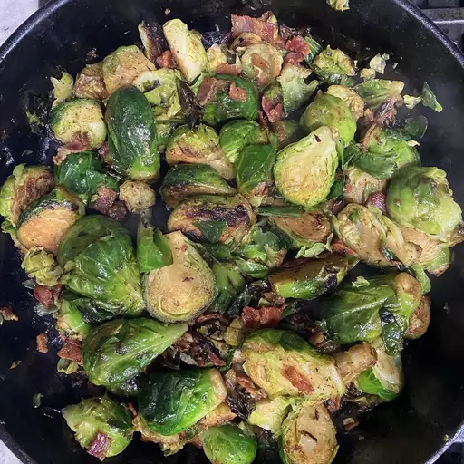

Back to Recipes
Braised Brussels Sprouts

Description
A delicious brussels sprouts recipe from AllRecipes. This recipe is perfect for
>
a cozy dinner party or a special occasion. The sprouts are tender and flavorful, and the sauce is rich and savory. I served it
>
with a side of creamy mashed potatoes and my favorite braised short ribs.
Ingredients
- 4 slices thick-cut bacon, sliced into 1/4-inch strips, or more to taste
- 1 pound (450 g) brussels sprouts, trimmed and halved
- 1 clove garlic, thinly sliced, or more to taste
- 1/2 cup (120 ml) chicken broth
- Salt and pepper to taste
- 1 tablespoon (15 g) unsalted butter
- 1 tablespoon balsamic vinegar, or to taste
Instructions
- Cook bacon in a large cast iron skillet over medium heat until just crisp, 5 to 7 minutes. Transfer to a paper towel-lined plate, reserving bacon grease in the skillet.
- Place Brussels sprouts in the skillet with the cut-sides down. Increase heat to medium-high and saute in the bacon grease until lightly browned, 2 to 3 minutes.
- Add garlic and saute until fragrant, about 30 seconds.
- Pour in chicken stock and cover skillet with a lid; simmer until Brussels sprouts are bright green, 3 to 5 minutes. Remove the lid and continue simmering, until liquid is evaporated and sprouts are at desired tenderness, 3 to 5 more minutes.
- Remove skillet from the heat. Add bacon, butter, balsamic vinegar, salt, and pepper; stir until butter is melted.